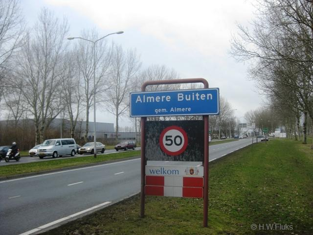
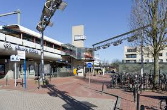
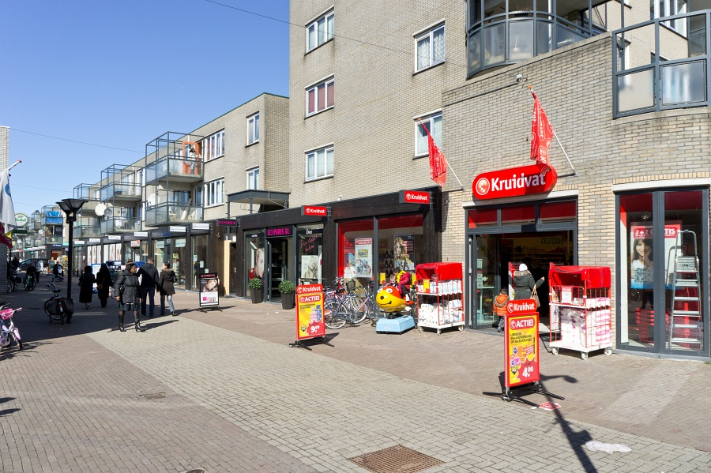
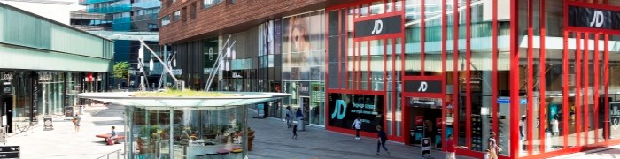
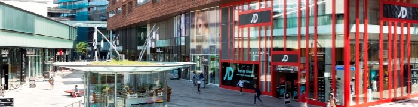

Nieuws uit almere buiten

Fusce pulvinar diam ut maximus feugiat. Praesent varius lacus vitae bibendum lacinia. Donec finibus
metus ultricies risus accumsan, nec porta tellus molestie. Suspendisse eget fermentum est. Curabitur eget
consequat arcu. Phasellus enim purus, imperdiet vitae nibh nec, elementum dignissim mauris. Phasellus
laoreet leo dolor, nec elementum dolor accumsan vel. Aliquam id nisl ut massa euismod aliquam ac vel ipsum.
Morbi ultricies at ante sed faucibus. Mauris auctor arcu et dolor efficitur, et ullamcorper odio faucibus.
Ut ut tortor porttitor, commodo neque non, consectetur est. Curabitur imperdiet est quis dui dignissim, non
blandit dolor sagittis.
Quisque imperdiet eget est vel tincidunt. Pellentesque porta eget lorem non vehicula. Mauris consequat
mauris id tempus luctus.

Suspendisse rutrum ultrices diam a lobortis. In lacinia est vitae lectus dictum
vehicula. Maecenas vestibulum finibus dui. Aenean et bibendum ligula, ac vestibulum ipsum. Pellentesque
consectetur convallis elementum.
Morbi non ante at tellus elementum molestie ac laoreet lacus. Pellentesque
vehicula convallis eros, vitae dapibus purus pulvinar eget.
Stage lopen in Almere
Ut porttitor, nisl a ultricies sagittis, nisi sapien convallis tortor, condimentum vehicula lacus
ante
vel velit. Nam vehicula suscipit metus quis condimentum. Aliquam interdum, neque eget vehicula dapibus,
urna
metus suscipit nunc, at rhoncus neque nisl sit amet ligula. Pellentesque habitant morbi tristique
senectus
et netus et malesuada fames ac turpis egestas.Sed faucibus ligula ac nisl molestie commodo.
Nunc consequat
mauris ut velit tristique facilisis. Morbi egestas elementum felis, eget malesuada metus.
Donec eget dapibus

ante. Suspendisse fringilla velit eget pellentesque bibendum
 
